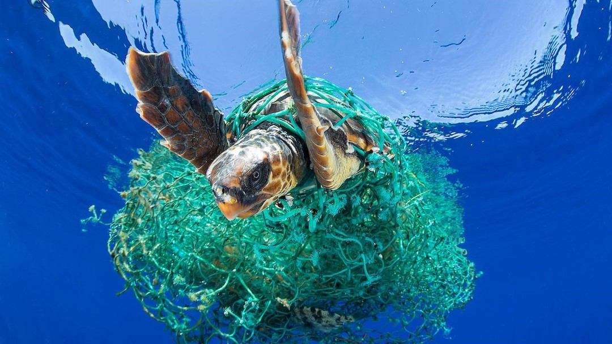
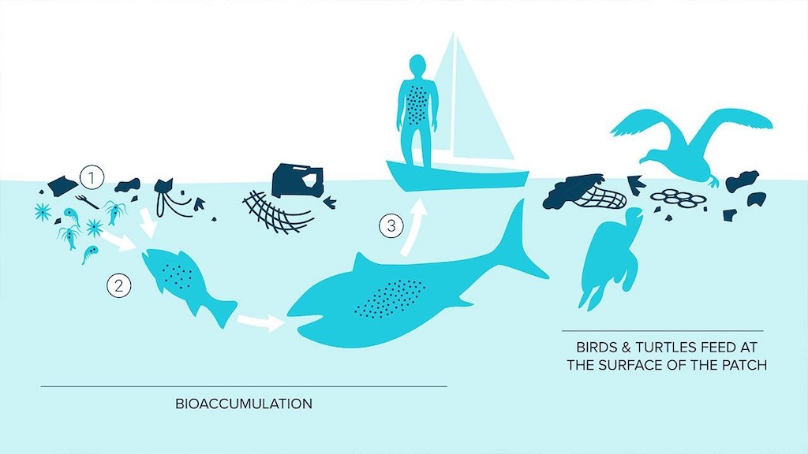
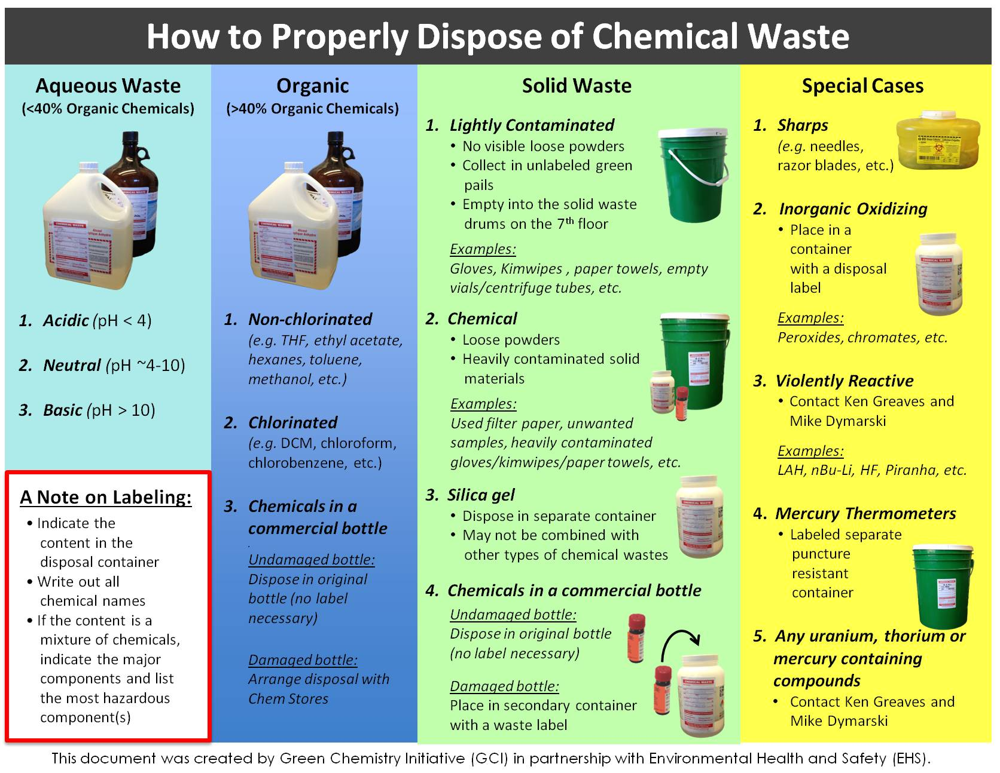

Harmful effects of chemicals on nearby water bodies.
With everything showing their two completely different sides, Chemicals to are a boon as well as a bane to the environment. No doubt, innovations and new techniques are making things easier and life more luxurious, but the price we pay for the same matters a lot. Might not be in terms of money or present day destruction or disappointments, but some of the innovations like introduction of detergents containing more phosphates, such that cleaning becomes easier, etc. will ask us for rebates in the coming future, by destroying the living habitat, extinction of various species,etc. While some chemicals are intended to kill weeds and pests, the majority of chemicals are waste from industrial and agricultural processes. Oceans and the world's water supply have been treated like sewage, or hazardous waste dumps as a result of inappropriate chemical waste management. Because water makes up up to 60% of a person's body, it's critical that contaminants are properly disposed of and do not get up in the water supply.
Impact of Chemicals on life:
Life on Earth has always been a blessing, but with increasing pollution and greenhouse effects, the surety of living as per one’s life cycle is now at stake. Not only humans, but animals, fishes, birds and all other living organisms are struggling to survive. More than two-third of the aquatic life has already been considered as endangered because of carelessly discarding chemicals and other trash. Chemicals and other wastes are making living tough not only for water bodies, but also for the mammals and humans. Since water is the basic necessity after air, water pollution has left no stones unturned. Chemicals do not need to be dumped into water sources for their effects to be seen. It has an impact even if we discard or release chemical waste because, when it rains, the chemicals run into rivers, where they feed waterfalls and eventually end up in the ocean.
Examples of Aquatic Pollution:
Chemical waste disposal in agriculture has resulted in a large increase in phosphorus and nitrogen over time. When it comes to water, too much of these nutrients creates a eutrophican, which allows algae and phytoplankton to grow excessively, causing severe repercussions. Algal blooms are caused by too much algae, which spread toxins known as "brown tides" or "red tides." Both red and brown tides are responsible for the deaths of seabirds, fish, and marine mammals, as well as causing harm to humans. Significant increases in algae have a negative impact on water quality, food resources, and habitats, as well as reducing the oxygen available to fish and other aquatic life. This reduction in oxygen level occurs because bacteria consumes all the oxygen once these harmful blooms start dying. Another important example of Aquatic Pollution is Acid Rain, which is caused by the formation of mild acidic chemicals by nitrogen oxides and sulphur dioxide. Acid rain is hold completely responsible for the poisonous aluminium leaching from the soil. Acid rain causes lower pH and greater aluminium concentrations in surface water, which can kill fish and other aquatic species. In combination with increased acidity in aquatic environments, aluminium can damage fish gills, impairing breathing.
Detergents: the major source of water contamination
Detergent can simply be defined as an organic compound or mixture that contains soaps and/or surfactants (any organic substance/mixture) and is used for washing and cleaning, in homes as well as in industries.
Detergents are of 2 types:-
Phosphate detergents
Laundry detergents with phosphates are not widely consumed because of environmental concerns, but they do help the detergent to work better by cleating calcium and magnesium ions. Although phosphorus is not hazardous to the environment, it does create nutrient contamination, which is a severe environmental issue in many watersheds. Phosphates in water also cause Eutrophication of algae which is another issue because it creates conditions favorable to formation of harmful algal blooms. Nowadays, detergents usually don’t have phosphate in them because of the ban passed in 1993.
-
Surfactant detergents
Surfactants are compounds which are used between two liquids or a gas and a liquid etc. so that it can lower the surface tension (or interfacial tension) between them. They can act as detergents, emulsifiers, foaming agents, or even as dispersants. Surfactants are deposited in numerous ways on the ecosystem like the land and into water systems, whether as part of an intended process or as industrial and household waste.
Nonylphenol, a hazardous chemical present in detergents, has been discovered to bio-accumulate in water bodies and even the food chain, posing major environmental and health dangers. It is Nonylphenol ethoxylate that, in environmental conditions, breaks down to nonylphenol, which has numerous negative impacts on human’s bodies as it directly affects the hormonal and reproductive parts. It's been found in human breast milk, blood, and urine, and it's linked to reproductive and developmental issues in rodents.
After collecting detergent samples and water from above 6 Indian rivers, it was observed that the river's point II shows more anthropogenic activity than point I. The study discovered that the higher the anthropogenic activities, the higher the nonylphenol concentration.
Disposal of Chemicals:
The Environmental Protection Agency (EPA) regulates chemical waste under the Resource Conservation and Recovery Act (RCRA). It can't be thrown away in the garbage or flushed down the toilet. The EHS Hazardous Waste Program must be used to dispose of the majority of chemical wastes.
Using a hazardous waste disposal firm instead of dumping chemicals, which is illegal, is the best approach. Hazardous waste businesses are highly experienced and trained in disposing of hazardous chemicals in accordance with state and federal regulations. Instead of endangering the environment and risking huge state and federal fines, as Dupont and Walmart recently discovered, it's advisable to hire a hazardous waste disposal business to dispose the chemicals appropriately. These hazardous waste companies are highly effective and provide us with great cost saving.